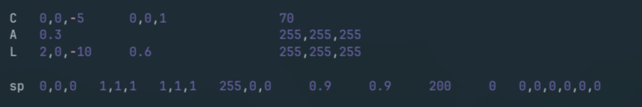
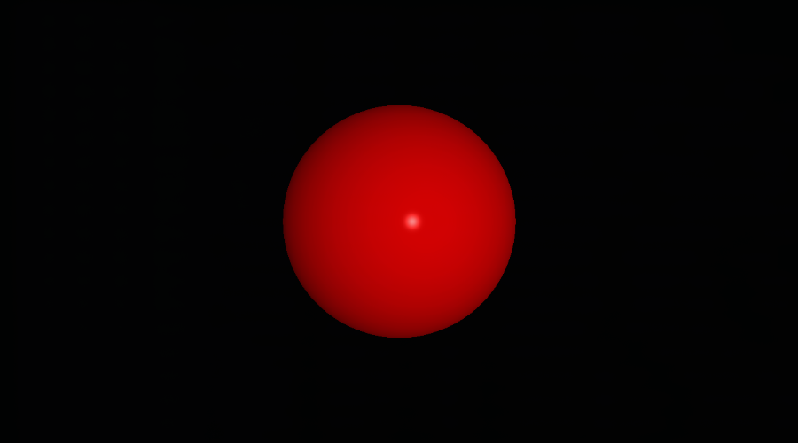

MiniRT project is a fundamental ray tracing engine developed from scratch using C, serving as a demonstration of computer graphics and physically-based rendering principles.
MiniRT was completed during the 42 common core, in collaboration with John Doe.
How does it works ?
The method calculates the final color of each pixel by simulating the path of light. For every intersection with an object, the color is determined using a complex model that synthesizes data from the object's material, light sources, and view direction. The result is a realistic image that accurately captures shadows, reflections, and material properties.
The scene
Objects data are defined in a .rt file parsed before image rendering. The parser validates and translates simple text definitions into mathematical objects required by the ray tracer.
C - Camera
# Pos Dir FOV C 0,0,-15 0,0,1 70
The viewpoint and direction of the scene, defined by origin, orientation vector, and Field Of View.
A - Ambient Light
# Brightness Color A 0.4 255,255,255
A uniform background illumination that brightens all objects equally, preventing absolute blackness.
L - Lights
# Pos Br. Color L 0,0,-5 0.6 255,255,255
Point light sources defined by position, brightness, and color, critical for shadows and reflections.
Geometric Objects
All geometric objects (Sphere, Plane, Cylinder, Cone) share a common definition format. Here is a sphere as an example.
sp / pl / cy / co (for sphere, plane, cylinder and cone)
# Pos Rotation Scaling Color Diffuse Specular Shininess Reflective Shearing sp 0,0,0 1,1,1 1,1,1 250,55,125 0.9 0.9 200.0 0.2 0,0,0,0,0,0
This object defines a sphere with position, rotation (even though it doen't change anything for a perfectly round sphere), diameter, color, and key material properties for light interaction, including diffuse reflection, specular highlights, and shininess (hardness).
Basic Example
Bellow is a basic example of the project : the representation of a red [255,0,0] sphere of diameter/scale: 1 unit [1,1,1], positioned at [0,0,0] coordinates. The camera is positioned 5 units back from the origin and is looking forward [0,0,1]. A white light at [2,0,-10] illuminates the sphere, placing the reflection subtly right of center.
Input : Scene File (.rt)
Output : Rendered Scene
Ray Generation and Intersection
For every single pixel on that window, we shoot an invisible, perfectly straight light ray out into the 3D scene. The ray's starting point and direction are calculated based on where we put the camera, its angle, and its field of view (how wide the shot is). All of this depends on heavy-duty 3D math called vector algebra, that keep track of every position and direction.
Once a ray is fired, the code checks every single object in the scene to see if the ray hits it. We use mathematical formulas specific to each shape (sphere, plane, etc.) to figure out exactly where the collision happens.
If a ray hits multiple objects, we only care about the very first object it hits—the closest one to the camera. That's the one we'll color in.
C implementation example : the sphere intersection calculation
int get_sphere_inter(const t_object *object, const t_ray *ray, t_inter_list *list) { t_vec3 oc; // Vector from Ray Origin to Sphere Center double a; double b; double c; double discriminant; oc = vec3_vec_substraction(ray->origin, get_point3(0, 0, 0)); a = vec3_dot(ray->dir, ray->dir); b = 2.0 * vec3_dot(ray->dir, oc); c = vec3_dot(oc, oc) - 1; discriminant = (b * b) - (4 * a * c); if (discriminant < 0) // Ray misses the sphere return (0); // Calculate the two solutions for t (t0 and t1) and add them to the intersection list list->inters[list->count].t = ((-b - sqrt(discriminant)) / (2.0 * a)); list->inters[list->count].obj = object; list->count++; list->inters[list->count].t = ((-b + sqrt(discriminant)) / (2.0 * a)); list->inters[list->count].obj = object; list->count++; return (0); }
In our project, we simplify intersection testing by defining all shapes relative to the origin (local space). Instead of moving the shape into world space using transformation matrices (rotation, translation, scaling) for every ray, we transform the ray itself by the inverse of the object's transformation matrix. This is known as Object Space Intersection.
Phong Shading: The Recipe for Reality
The final color of any point on a surface is determined using the classic lighting formula known as Phong Shading. This model combines three distinct components of light interaction based on the object's material properties:
- Ambient Light: The overall, general light in the room. It makes sure nothing is pitch black, even in the shadows.
- Diffuse Light: The main, scattered light you see. It depends on how directly the light is hitting the surface.
- Specular Highlights: These are the bright, shiny highlights you see on polished surfaces. They depend on how directly the light bounces toward the camera, making things look 'hard' or 'wet.'
Shadows: The Visibility Test
For every point hit on an object, the renderer casts a secondary ray toward every light source. If this shadow ray intersects any other object before it reaches the light, the point is considered to be in hard shadow, and only the ambient light component is applied.
Project Advanced Features
Reflections (Recursive Ray Tracing)
When an object has a high reflective setting, we shoot a whole new ray off the surface at the perfect mirror angle. The renderer then calculates the color from that new ray's path (which might hit another object, and another...) and blends it back into the original pixel color. This sophisticated iterative technique is called recursive ray tracing.
Performance and Scene Generation
- Multi-Threading: The rendering process is split across multiple CPU cores using C's pthread.h library in order to calculate pixel colors simultaneously, drastically reducing rendering time.
- Random Scene Generation: Includes a utility to automatically generate (and save) new `.rt` scene files with random objects, positions, and colors for stress-testing the rendering engine.
-
Real-Time Debugging & Interactive Mode:
Using keyboard inputs, the user can instantly move the camera, adjust the position of lights, and translate, scale and rotate geometric objects.
This was used to speed up the debugging process and artistic iteration.
In order to implement it, the pixel's size is multiplied by a certain ratio so the scene is rendered way faster, as seen bellow.
Render Showcase and Experimentations